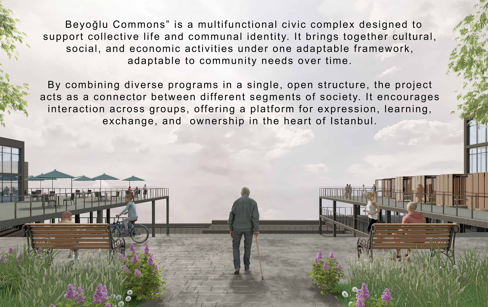
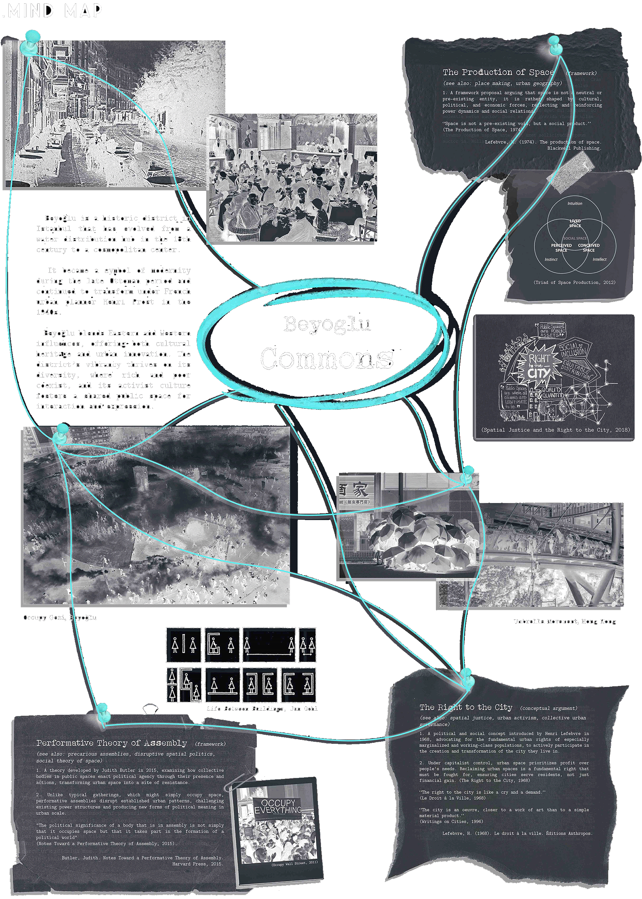
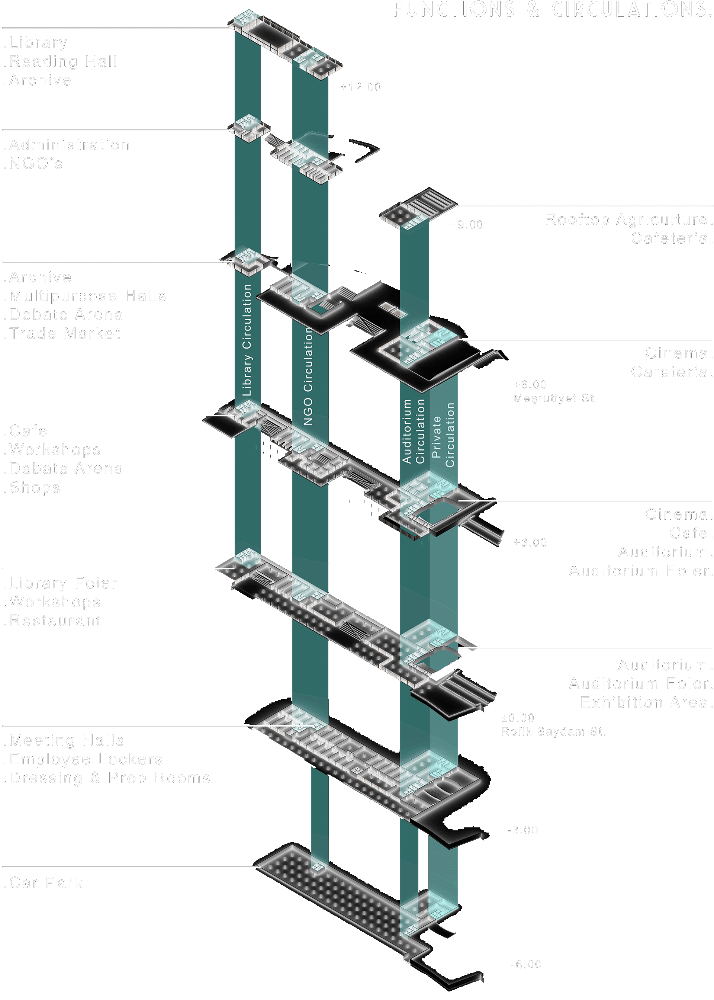
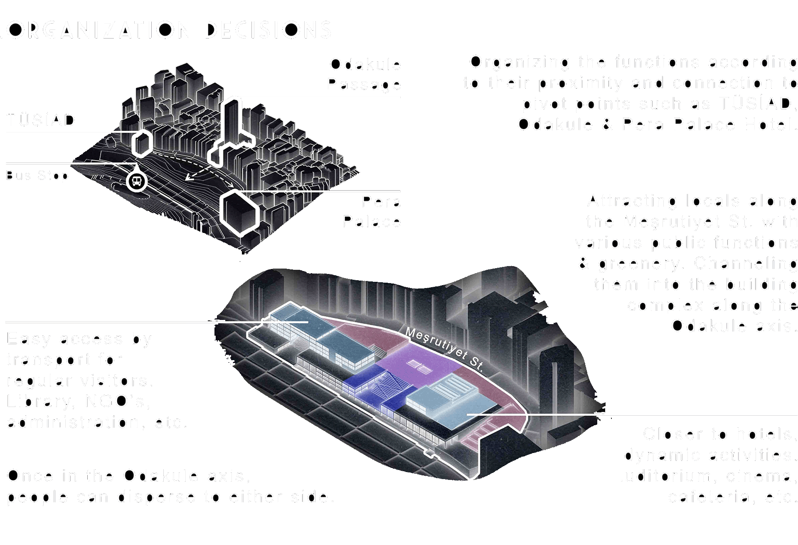
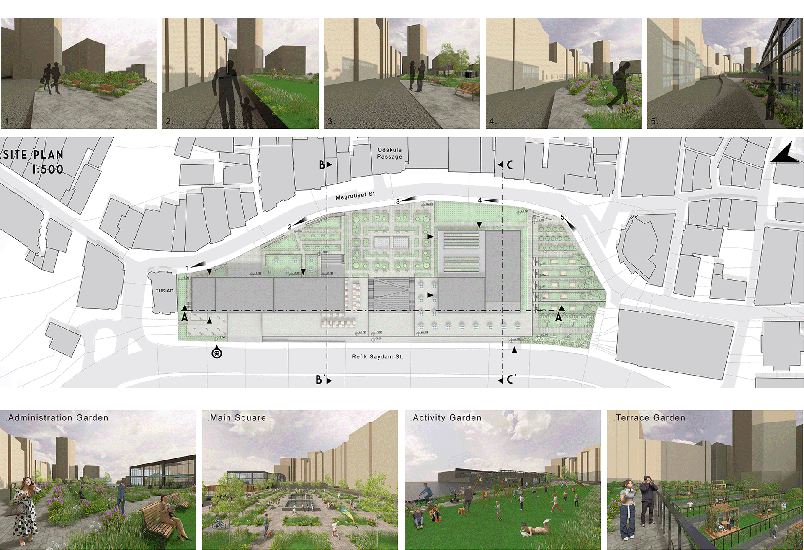
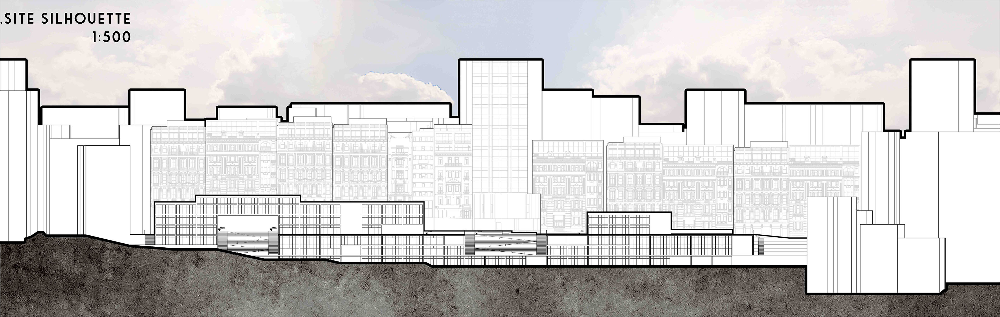
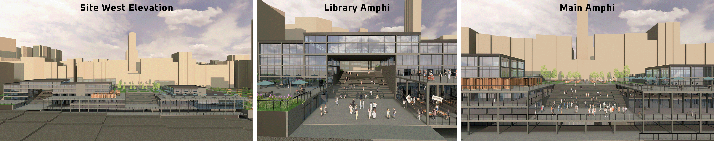
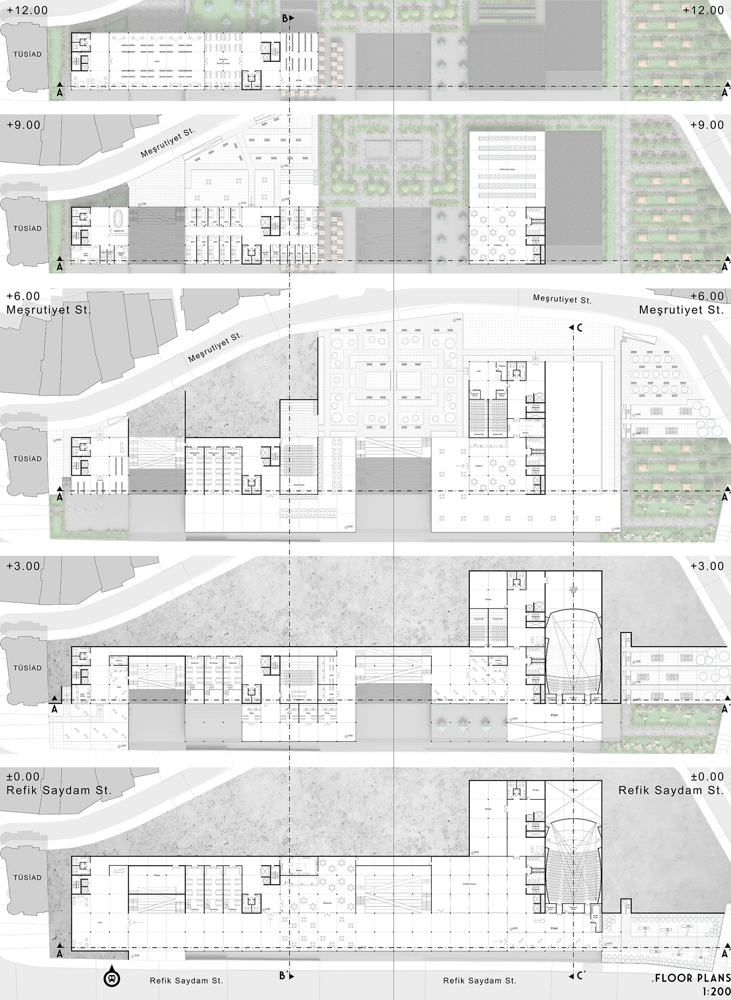
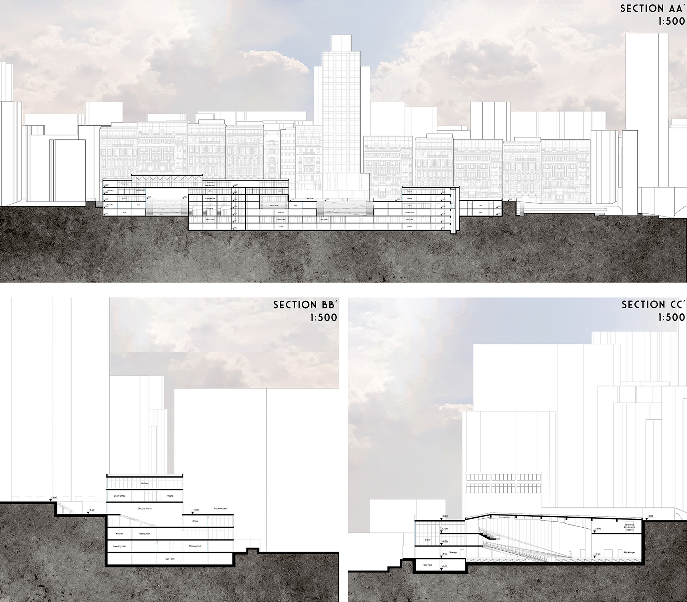

Beyoğlu Commons

ABOUT THE PROJECT
Beyoğlu Commons” is a multifunctional civic complex designed to support the local community in exercising their "right to the city".
Exploring liminal spaces with a focus on protest spaces in history around the world through case studies and theoretical reports, the project aims to bring together cultural, social, and economic activities in one adaptable framework, allowing the community to become both the creator and the transformer of its use over time.
By combining diverse programs within a single open structure at the heart of Istanbul, the project acts as a connector between different segments of society.







